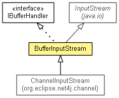

org.eclipse.net4j.buffer
Class BufferInputStream
java.lang.Object
 java.io.InputStream
org.eclipse.net4j.buffer.BufferInputStream
java.io.InputStream
org.eclipse.net4j.buffer.BufferInputStream
- All Implemented Interfaces:
- Closeable, IBufferHandler
- Direct Known Subclasses:
- ChannelInputStream
- public class BufferInputStream
- extends InputStream
- implements IBufferHandler

A buffer handler that defragments the passed buffers into a continuous byte
sequence which is exposed as an input stream.
NO_TIMEOUT
public static final long NO_TIMEOUT
- See Also:
- Constant Field Values
DEFAULT_MILLIS_BEFORE_TIMEOUT
public static final long DEFAULT_MILLIS_BEFORE_TIMEOUT
- See Also:
- Constant Field Values
DEFAULT_MILLIS_INTERRUPT_CHECK
public static final long DEFAULT_MILLIS_INTERRUPT_CHECK
- See Also:
- Constant Field Values
BufferInputStream
public BufferInputStream()
getMillisBeforeTimeout
public long getMillisBeforeTimeout()
getMillisInterruptCheck
public long getMillisInterruptCheck()
restartTimeout
public void restartTimeout()
- Since:
- 2.0
getException
public RuntimeException getException()
- Since:
- 2.0
setException
public void setException(RemoteException exception)
- Since:
- 4.0
handleBuffer
public void handleBuffer(IBuffer buffer)
- Description copied from interface:
IBufferHandler
- Handles an
IBuffer and optionally releases it. The implementor of this method takes over the ownership of
the buffer. Care must be taken to properly release the buffer if the ownership is not
explicitely passed to some further party.
- Specified by:
handleBuffer in interface IBufferHandler
- Parameters:
buffer - The buffer to be handled and otionally released.
read
public int read()
throws IOException
- Specified by:
read in class InputStream
- Throws:
IOException
close
public void close()
throws IOException
- Specified by:
close in interface Closeable- Overrides:
close in class InputStream
- Throws:
IOException
toString
public String toString()
- Overrides:
toString in class Object
ensureBuffer
protected boolean ensureBuffer()
throws IOException
- Throws:
IOException
Copyright (c) 2004 - 2011 Eike Stepper (Berlin, Germany) and others.